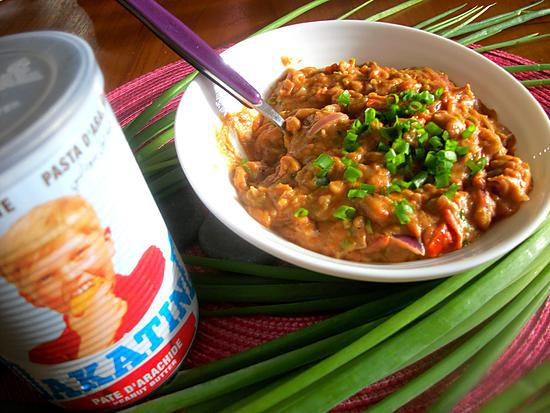

Rougail Dakatine
Description
Plat traditionnel créole réunionnais.
Ingrédients
- 1x Oignon
- 1x Tomate
- Pâte d'arachides "Dakatine"
- 1/2 Piment Vert
- 100g Riz Basmati
- Huile de tournesol
- Sel
- Poivre
Étapes
- Couper finement l'oignon,la tomate et le Piment.
- Mettre à cuir le riz.
- Mettre à feu doux une marmite avec un peu d'huile
- Faire suer les oignons
- Lorsque les oignons deviennent translucides, ajouter les tranches de saucisses et les faire frire de chaque côtés
- Ajouter votre tomate et faite la réduire
- Ensuite ajouter votre Dakatine, mélanger.
- Assaisonner avec du sel du poivre, ajouter du Piment
- Laisser cuire à feu doux pendant 3 minutes
- VOILA!